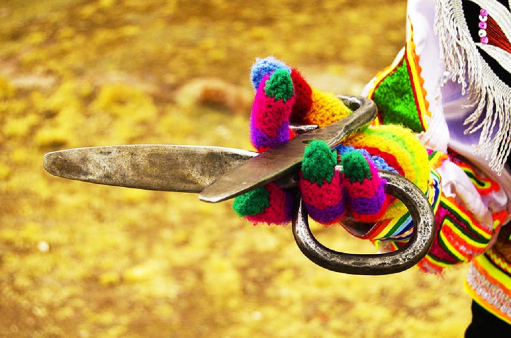

The scissors in the Danza de las Tijeras
Note 015
Home > Blog A Musician's Log > Note 015
Sounding the Dance
The Danza de las Tijeras, the "dance of the scissors," is usually described through what the eye catches first: demanding movements, jumps, turns, balances, ritualized competition, and the pair of metal blades held by the dancer while a violinist and a harpist play.
That description is useful, but it leaves something important half-hidden. The dance is not only seen. It is also heard through the dancer's hand.
The so-called scissors are small objects, but they matter. They place the dancer inside the music. By striking the metal blades while moving, the dancer produces a sharp rhythmic layer that joins the violin, the harp, the feet, the body, and the attention of the public. The dancer is therefore not only moving to music. S/he is also making part of it.
This is why the scissors deserve attention as musical instruments. They are portable, simple in construction, and limited in pitch, but they are not marginal. Their sound helps define the dancer's presence within the performance.
Two Blades as a Sounding Object
The "scissors" used in the Danza de las Tijeras (also Danza de Tijeras or Baile de Tijeras) are not scissors in the ordinary cutting sense. They consist of two separate metal blades or rods, commonly held together in the dancer's right hand and struck against each other. Their purpose is not practical cutting, but sound.
Organologically, they can be understood as concussion idiophones: instruments in which two parts of the same material are struck together, producing sound through the vibration of the material itself. In this case, metal touches metal, and the result is brief, dry, and sharply articulated.
The sound has little sustain. There is no resonating chamber, no membrane, no string, no melodic development. What matters is attack, timing, and clarity. Each strike produces a small rhythmic event tied directly to the dancer's movement.
That connection is crucial. The blades are not played separately from the dance. Their sound emerges while the dancer turns, bends, steps, jumps, balances, or prepares for another movement. The rhythm is produced by a body already under physical demand.
Harp, Violin, and Accompaniment
The Danza de las Tijeras is performed with the acompaniment of violin and harp. The word "accompaniment," however, needs care. It can make the musicians sound like background support for a visual display, when the performance is more complex than that.
The violin and harp provide indeed much of the melodic, harmonic, and rhythmic frame. They shape the musical space in which the dancer acts. Their presence also reflects the long incorporation of European instruments into Andean musical life, where they became part of local expressive systems rather than simple foreign additions.
The scissors occupy another position within that sound world. They add a metallic layer produced by the dancer. The ensemble is therefore not only bowed string and plucked string. It also includes struck metal, footwork, movement, and public response.
The dancer is not silent within the music. Through the scissors, s/he contributes to the sound of the performance.
Movement Made Audible
The Danza de las Tijeras is often discussed in terms of agility, endurance, and competition. Those elements matter, although the language of "acrobatics" can become too thin if it detaches the movements from their ritual, communal, and historical settings.
The dancer's movements unfold before an audience. Skill, stamina, precision, reputation, and control are all being watched. The scissors add another layer to that public evaluation, because the dancer must keep sounding the blades while moving.
A jump, turn, bend, balance, or descent is therefore not only a visible action. It leaves a sonic trace. The metallic rhythm makes the dancer's timing audible. If the movement loses steadiness, the sound can reveal it. If the hand weakens, the rhythm changes. If coordination fails, the blades can betray the body.
The scissors do not explain the dance by themselves. They are one part of a larger performance involving musicians, dancer, community, competition, and setting. But they make one aspect of the dance unusually clear: movement here is not only performed in space. It is also marked in sound.
The Acoustics of a Small Metal Instrument
The sound of the scissors is modest, but effective. Metal-on-metal contact produces a sharp transient: a sound with a clear attack and short decay. It does not need resonance to be noticed. It cuts through by being brief, bright, and precise.
That matters in open performance settings, where the dance may take place outdoors, amid voices, movement, distance, wind, and other environmental sounds. A small metal instrument can remain perceptible because its sound is concentrated.
The scissors do not dominate the ensemble. Their importance lies elsewhere. They mark the dancer's presence with a recurring metallic signal. They give the body a small but persistent acoustic outline.
This also explains why such a simple object can be so effective. Two pieces of metal are enough to produce a sound that is durable, portable, recognizable, and closely tied to movement.
Why the Scissors Matter Organologically
The scissors are useful for organology because they show the limits of classification alone. Calling them concussion idiophones tells us how they produce sound, but not why they matter in the dance.
Their importance comes from the way they connect sound to movement. They are rhythm instruments, but their rhythm is produced under physical pressure. They are hand-held idiophones, but their sound depends on the whole body. They are simple objects, but they gather several dimensions at once: music, gesture, competition, risk, endurance, and public attention.
They also complicate the usual separation between dancer and musician. The dancer does not play like the violinist or the harpist, but s/he does produce sound as part of the ensemble. The instrument gives the dancer a percussive voice.
The scissors of the Danza de las Tijeras matter because they make movement audible. They show that an instrument does not need melodic range, harmonic complexity, or large resonance to shape a performance. Sometimes two pieces of metal, struck at the right moment by a moving body, are enough to change how an entire dance is heard.
Readings
- Arce Sotelo, Manuel. 2006. La danza de tijeras y el violín de Lucanas. Lima: Fondo Editorial PUCP / Instituto Francés de Estudios Andinos.
- Núñez Rebaza, Lucy. 1990. Los dansaq. Lima: Museo Nacional de la Cultura Peruana / Instituto Nacional de Cultura.
Video. From YouTube user Renzo Vignati Llosa.